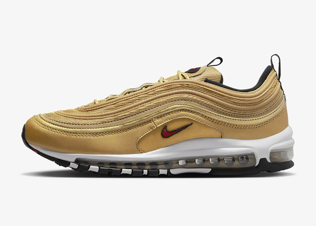

Nike Shoes
Air Jordan is a line of basketball shoes produced by Nike, Inc. Related apparel and accessories are marketed under Jordan Brand. The silhouette of Michael Jordan served as inspiration to create the "Jumpman" logo.

Air Jordan is a line of basketball shoes produced by Nike, Inc. Related apparel and accessories are marketed under Jordan Brand. The silhouette of Michael Jordan served as inspiration to create the "Jumpman" logo.
Nike Air technology consists of pressurised air inside a tough yet flexible bag, and provides more flexibility and spring without compromising structure. The Air-Sole units maintain their given form with elasticity, reduce impact and keep the shoe snug and lightweight.

The co-founder of Nike, Phil Knight, and his son Travis Knight, along with the holding companies and trusts they control, own more than 97% of outstanding Class A shares.This allows the Knight family to exercise effective control of Nike even though it is a publicly traded business.

Davidson's inspiration for the logo came from the Greek goddess Nike, known for her speed and strength. She also drew inspiration from the wings of the goddess, which gave her the idea for the Swoosh design. Overall, the Swoosh took Davidson around 17.5 hours to design.The majority of Nike shoes are made in China and Vietnam. Apart from these two countries, Nike shoes also come from Indonesia, Japan, Brazil, Taiwan, South Korea, and Italy.